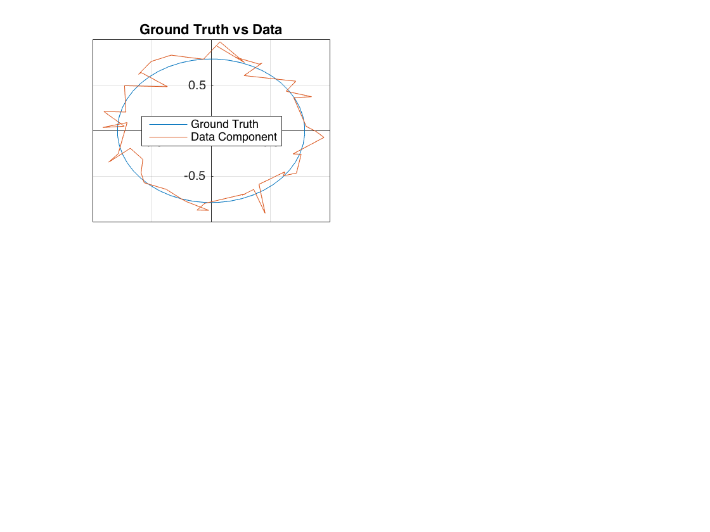
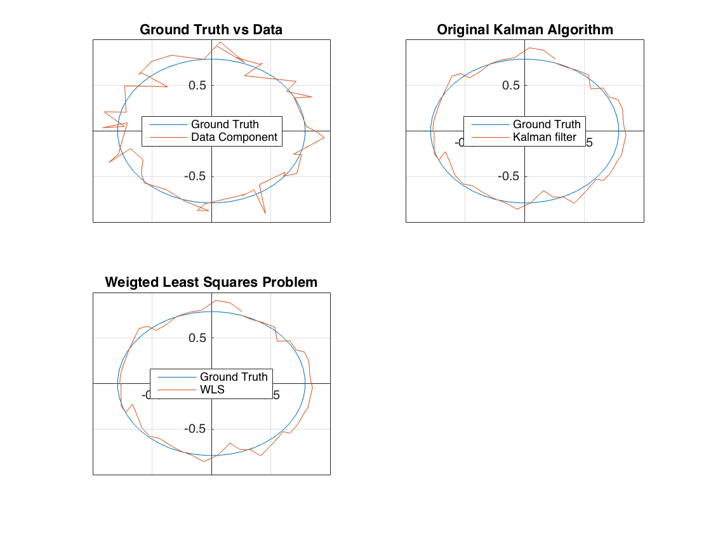
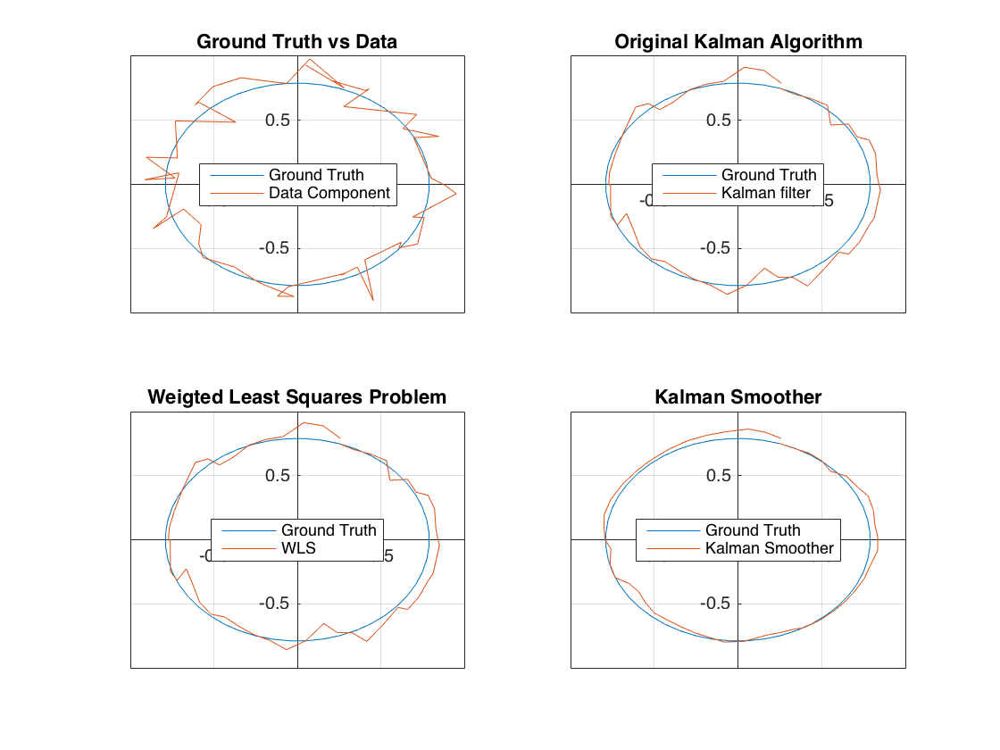

Contents
clc; clear all; close all;
Initial Data
theta = pi/24;
tfine = 0:theta:pi*2;
Gk = [cos(theta),sin(theta);-sin(theta),cos(theta)];
Hk = [1,1];
x0 = [.25,.75]';
N = length(tfine)-1; qf = zeros(2,N+1);
qf(:,1) = x0;
for k=1:N, qf(:,k+1) = Gk*qf(:,k); end
qxf = qf(1,:); qyf = qf(2,:);
sigmaH = .1;
sigmaG = .05;
noise = randn(size(qf));
zxy = qf + sigmaH*noise;
z = Hk*zxy;
[ nVar, ~ ]=size(Gk);
[xKal_filter PKal_filter] = kalman (x0, zeros(nVar), Gk, Hk, z(:,:), sigmaG.^2*eye(nVar), sigmaH.^2, zeros(size(x0)));
Initial Data vs Ground Truth
subplot(2,2,1);
plot(qf(1,:),qf(2,:),zxy(1,:),zxy(2,:)); grid on;
legend('Ground Truth', 'Data Component')
legend('Location','best')
ax = gca;
ax.XAxisLocation = 'origin';
ax.YAxisLocation = 'origin';
title('Ground Truth vs Data')

Kalman Filter: 2 different implementations
subplot(2,2,2);
plot(qf(1,:),qf(2,:),xKal_filter(1,:),xKal_filter(2,:)); grid on;
legend('Ground Truth', 'Kalman filter')
legend('Location','best')
ax = gca;
ax.XAxisLocation = 'origin';
ax.YAxisLocation = 'origin';
title('Original Kalman Algorithm')
[xWLS PWLS] = kalman (x0, zeros(nVar), Gk, Hk, z(:,:), sigmaG.^2*eye(nVar), sigmaH.^2, zeros(size(x0)),'WLS');
subplot(2,2,3);
plot(qf(1,:),qf(2,:),xWLS(1,:),xWLS(2,:)); grid on;
legend('Ground Truth', 'WLS')
legend('Location','best')
ax = gca;
ax.XAxisLocation = 'origin';
ax.YAxisLocation = 'origin';
title('Weigted Least Squares Problem')
[xKS PKS] = kalman (x0, zeros(nVar), Gk, Hk, z(:,:), sigmaG.^2*eye(nVar), sigmaH.^2, zeros(size(x0)),'KS');

Kalmann Smoothing
subplot(2,2,4);
plot(qf(1,:),qf(2,:),[x0(1) xKS(1,:)],[x0(2) xKS(2,:)]); grid on;
legend('Ground Truth', 'Kalman Smoother')
legend('Location','best')
ax = gca;
ax.XAxisLocation = 'origin';
ax.YAxisLocation = 'origin';
title('Kalman Smoother')
deltaXfilterLast=norm(xWLS(:,end) - xKal_filter(:,end))
deltaPfilterLast=norm(PWLS(:,:,end) - PKal_filter(:,:,end))
deltaXfilter=norm(xWLS(:,:) - xKal_filter(:,:))
for i=1:N+2
deltaPsfilter=norm(PWLS(:,:,i) - PKal_filter(:,:,i))/(N+2);
end
deltaPsfilter
deltaXFSLast=norm(xKS(:,end) - xKal_filter(:,end))
deltaPFSLast=norm(PKS(:,:,end) - PKal_filter(:,:,end))
deltaXfilterLast =
1.413083212815398e-15
deltaPfilterLast =
4.381485588785463e-17
deltaXfilter =
1.816062500790920e-14
deltaPsfilter =
8.762971177570926e-19
deltaXFSLast =
1.387778780781446e-15
deltaPFSLast =
0.021693634950311
